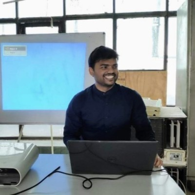

Hello.
I am software developer at TCS and have gained two years of experience in Mobile Development. Now days, I have indulged myself into Web Development cource offered by Angela Yu. I loved playing RPG games.
My Skills.

Design & Development
I like to learn about new technologies and dig deep into the implementation of software and frameworks. I have gained wealth of experience designing and developing mobile applications using Xamarin, ReactNative and Flutter platforms.
Explore mountains
I love to trekk with my friends and my first treek was Triund, Mcleodgunj. After that we have explored Dayara Bugyal, Utarkashi and Hemkund trekk.